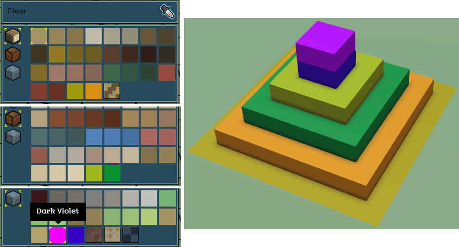
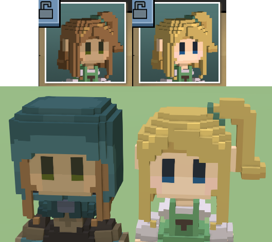
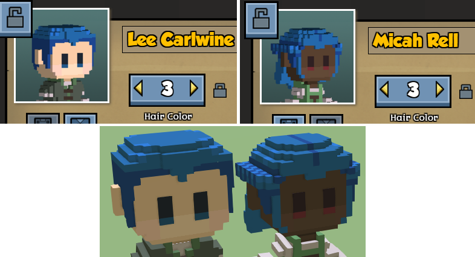

How to add building colors
How to add building patterns is explained here.
Adding more colors to the building palette is easy:
Add a mixinto to "stonehearth:build:brushes" in your manifest.
"mixintos" : { "stonehearth:build:brushes" : "file(data/build/building_brushes.json)" }Your mixinto file should contain only the colors we want to add, inside the "always_available" keys for every material. For example, our mixinto would look like this if we were to add 2 custom colors for each of the stonehearth building resources:
{ "always_available": { "wood resource": { "colors": { "#A3990D": { "display_name": "i18n(more_colors:data.build.building_brushes.colors.#A3990D)", "ordinal": 100 }, "#D89211": { "display_name": "i18n(more_colors:data.build.building_brushes.colors.#D89211)", "ordinal": 101 } } }, "clay_brick resource": { "colors": { "#9CB716": { "display_name": "i18n(more_colors:data.build.building_brushes.colors.#9CB716)", "ordinal": 100 }, "#0B912F": { "display_name": "i18n(more_colors:data.build.building_brushes.colors.#0B912F)", "ordinal": 101 } } }, "stone resource": { "colors": { "#AF00E0": { "display_name": "i18n(more_colors:data.build.building_brushes.colors.#AF00E0)", "ordinal": 100 }, "#3400C4": { "display_name": "i18n(more_colors:data.build.building_brushes.colors.#3400C4)", "ordinal": 101 } } } } }The keys inside "always_available" match material tags for the available resources. Here's how to add custom building resources if you want to have your own custom resources for building.
The colors we add here will be available for any of the building parts, except for roofs.
Inside each key for the material tag, we have a "colors" entry which contains the list of colors. Each color is then expressed as a hexadecimal RGB color, starting with a hash symbol (#). As a convention, these colors are in uppercase.
Each color entry has a "display_name", which is a localized key for the name you want to show in the tooltip, and an ordinal to arrange the colors in the palette. The names for the existing colors in the game were obtained using this website, but you can use any name you want.
 It doesn't matter if we have duplicated ordinals in the list, but we can't have duplicated colors. This includes colors repeated on a different material entry. The game needs to associate a color with a certain resource material in order to calculate the building cost. So make sure that none of the colors you add has a duplicate in your mod nor in the stonehearth mod.
It doesn't matter if we have duplicated ordinals in the list, but we can't have duplicated colors. This includes colors repeated on a different material entry. The game needs to associate a color with a certain resource material in order to calculate the building cost. So make sure that none of the colors you add has a duplicate in your mod nor in the stonehearth mod.Test your new colors in game (you can spawn the resources using the Item Stamper from debugtools): 
How to add custom appearances
The customized appearance of hearthlings is controlled by the customization service and the customization component.
For hearthlings, they have it declared in the base_human.json mixin:
"stonehearth:customization": {},
Then, in the corresponding JSON files of the human entities (male_1.json, male_2.json, female_1.json, etc), they have the "stonehearth:customization_variants" inside the entity_data section:
...
"entity_data": {
"stonehearth:customization_variants": {
"customization_options": "stonehearth:humans:male:customizations",
"root": {
"hair_and_skin_color": {
"weights": {
"hair_and_skin_color": 1
}
},
"age": {
"weights": {
"young": 3,
"old": 1
}
}
},
"packages": {
"hair_and_skin_color": {
...
Here we have "customization_options", which points to a customization JSON file that contains all the possible styles that we can apply for this entity, "root" which defines weights for each package, and "packages", which is a list containing only the customizations (as defined in the customization JSON file we linked) that we want to make available for this entity, also with weights.
The keys under "root" are identifiers (we can use any identifier here), and the keys inside "weights" are names of packages declared below.
We can find the customization files for the hearthlings in the same folder than their base JSON file, stonehearth/entities/humans/male and stonehearth/entities/humans/female.
These customization files are indexes that contain all the possible styles we want a hearthling to be able to have, then in the male_1.json (etc) files we can define a subset of them, so that when we create that entity it only chooses from those styles.
They contain "categories" and "styles". The categories are defined like this:
"categories": {
"head_hair": ["head_hair"],
"face_hair": ["eyebrows", "facial_hair"],
"skin_color": ["skin_color"],
"eye_color": ["eye_color"],
"hair_color": ["hair_color"]
},
On the left we have an identifier we made up, and on the right we have arrays of strings that match names of the styles defined below (or "[none]", like for the "face_hair" category on the female_customizations.json). These categories are used in the roster screen, to retrieve the indices for the styles and be able to cycle through them with the UI.
The "styles" contain keys that we use as values for the categories and in our male_N.json / female_N.json files.
This way, we can add more categories and styles to the existing entities via a mixinto, and we can set up customization variants for our own modded entities.
Adding custom hairstyles
Hairstyles are QB models with a default color palette, which is mapped in stonehearth/data/materials/hair_color_map.json. The game then applies different color palettes to the same model when we choose the appearance of the hearthlings in the roster screen.
You will need to reuse the colors from this color map when designing your own hairstyles, but it's also possible to add more colors and add mixintos to cover them in the color and material maps.
When copying an existing QB model of a hairstyle, notice that it is broken in 2 layers:

The layer that corresponds to the upper part of the hair is named hat and the one for the lower part is named head. This separation is needed for implementing hats. Depending on the transparency setting you use for your headgear, the "hat" layer of the hair model will be hidden or not, when the hearthling equips the item.
So we have to make sure our layers are correctly named before exporting our model. Also notice that the male hearthlings are 1 voxel taller than the female ones, so it's always better to import an existing hairstyle so we can pick the colors with an eyedropper tool and know where to cut the hat part.
To add our custom hairstyle model we make a mixinto to the male/female_customizations.json file like explained above.
Our mixinto would look like this, for example:
{
"styles": {
"head_hair": {
"type": "model",
"values": {
"female_hair_9": {
"file": "file(hair_9.qb)"
}
}
}
}
}
The "type" is "model", so here we can reference a QB file. Make sure to not have duplicate keys in the "values" list, otherwise those models will be overwritten in the game.
Finally, we can test our new model in the game and make sure it looks good: 
Adding custom colors for skin, hair and eyes
The same way we added new hairstyles, we can make a mixinto to the customization files and add our own material maps.
The colors for the hearthlings' skin, hair and eyes are defined in a color_map. It is stonehearth/data/materials/color_maps/human_color_map.json, which mixins 3 color maps (one for the skin, one for the eyes and one for the hair).
In these color maps we can see which colors were used for the default models and which keys do they use for the material maps. So our custom material maps will have to match these keys.
In order to add a custom color (for example, for the hair), we have to create a mixinto for male_customizations.json (and another one for female_customizations.json, if we want to add the color to both of them):
"mixintos" : {
"stonehearth:humans:male:customizations" : "file(entities/humans/male/male_customizations.json)",
"stonehearth:humans:female:customizations" : "file(entities/humans/female/female_customizations.json)"
}
We're going to add 1 custom hair color for the male in this example. This is the male_customizations.json mixinto:
{
"styles": {
"hair_color": {
"type": "material_map",
"values": {
"blue": {
"file": "/more_colors/data/materials/material_maps/hair_blue_material_map.json"
}
}
}
}
}
Inside "hair_color" (which is the name of the package/category value), we have "type": "material_map". This means we will apply a material_map that will change the colors of the model to the colors defined in this JSON file. Inside "values", we have a key to identify this custom style.
You can have the same key name for keys defined inside different categories, but make sure you're not duplicating keys with any of the existing styles, otherwise you'd be overwriting them with this mixinto.
The mixinto for female_customizations.json would look exactly the same in this case.
Now we can copy one of the existing material maps for hair, so that we get the correct keys for hair (for example, stonehearth/data/material_maps/hair_red_material_map.json), rename it and edit it.
This is how hair_blue_material_map.json looks like after editing it:
{
"stonehearth:hair:hilight" : {
"color" : "#287ACB"
},
"stonehearth:hair:midtone" : {
"color" : "#236CA4"
},
"stonehearth:hair:shadows" : {
"color" : "#1C498B"
}
}
And now we can test our new hair color in the game: 
Using Lua to change customizations
We can find an example on how to change customizations using Lua in the customization component (_add_style and _remove_style functions):
self._entity:get_component('render_info'):add_material_map(file_path)
self._entity:add_component('model_variants')
:get_variant('default')
:add_model(file_path)
self:_set_added_styles(subcategory, style_info)
self._entity:get_component('render_info'):remove_material_map(file_path)
self._entity:add_component('model_variants')
:get_variant('default')
:remove_model(file_path)
self:_set_added_styles(subcategory, nil)
We can add and remove material maps using the render_info component, and change the models using the model_variants component.
Some mods from community members already make use of customizations, like Hearthlings of Many Faces, or Locks of Many Hair.